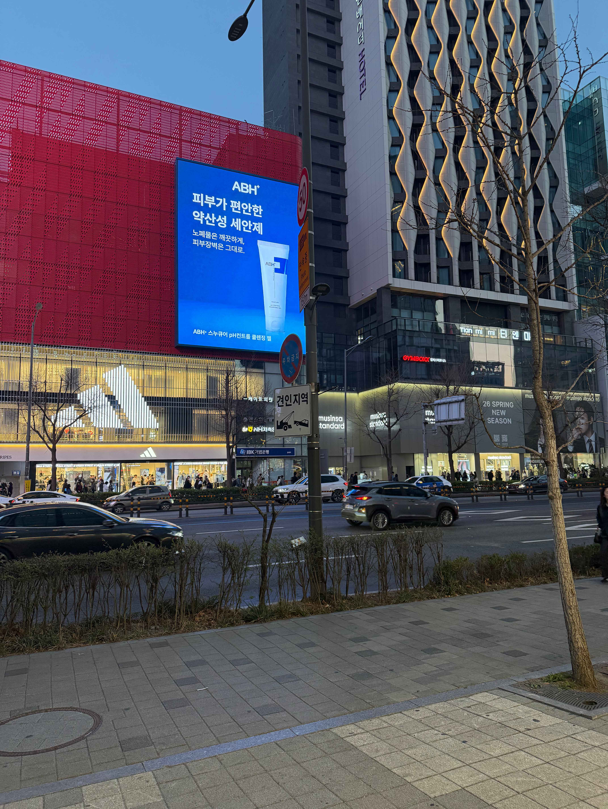
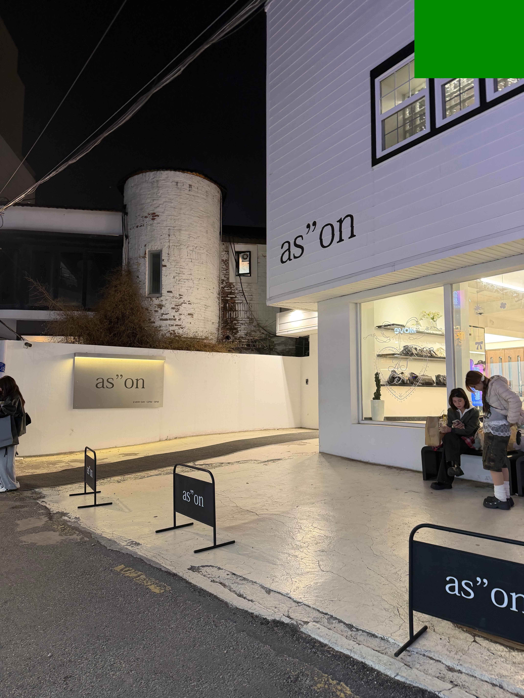
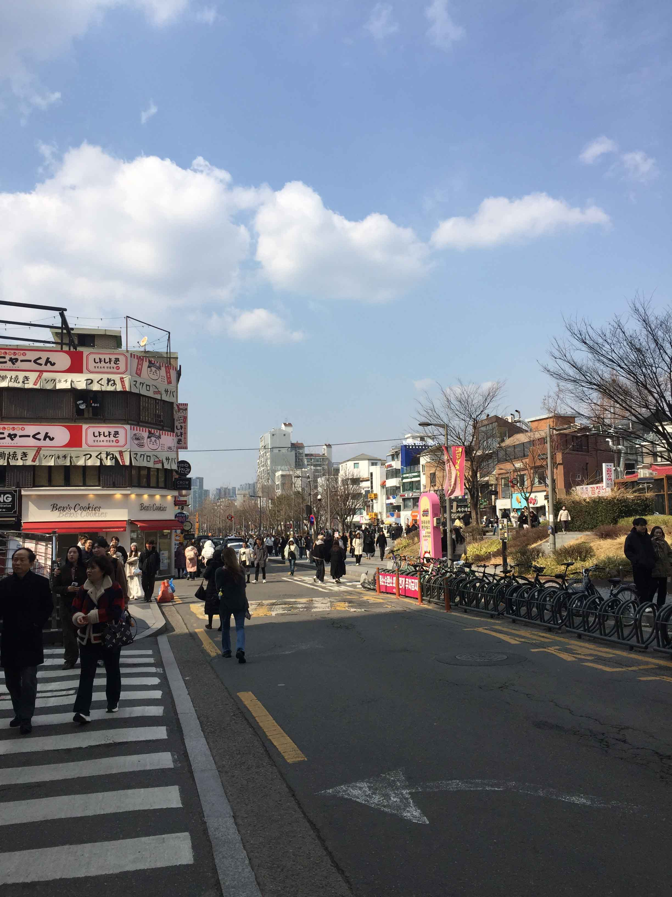

買い物・K-POP・グルメ・若者文化
かわいい洋服が買える。 免税可能な店も多く、系統も豊富だから欲しい服が見つかる。


ビジュアル神のチーズタッカルビ。 辛さ調整できるので日本人にもおすすめ。
📍住所： 서울 중구 명동1가 36-3 🗺 地図を見る
地図
K-POPショップや限定POPUPが多い。 アルバムやグッズ購入にもおすすめ。
📍住所： 서울 마포구 동교동 190-1 🗺 地図を見る
夜になるとダンスや歌の路上ライブ多数。 韓国の若者文化を感じたいならここ。
📍住所：서울 마포구 서교동 🗺 地図を見る
